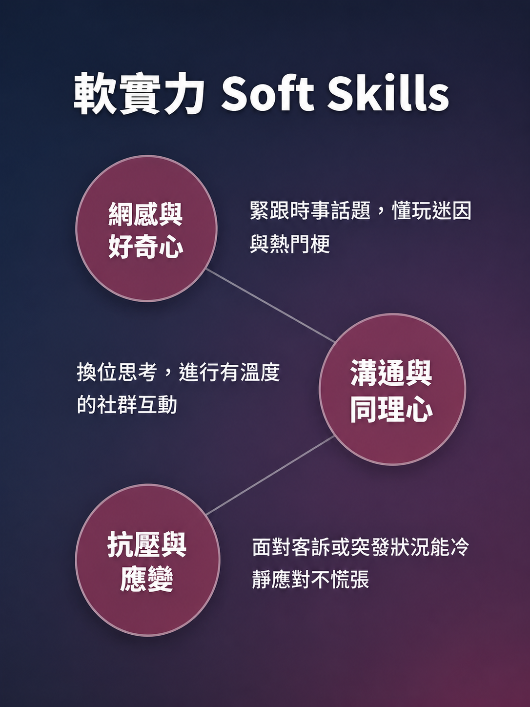

Q1：內容產出
撰寫貼文文案、構思短影音腳本。
行銷主管視角。評估求職者反應、提問專業與情境題。
應屆畢業生。展現個人特質、回答策略與臨場反應。
目標職務定位與產業背景
日常核心任務與職責範圍
硬實力（行銷工具）與軟實力特質
市場行情與企業福利發展
核心題庫與情境題回答策略
實戰演練還原與點評
Social Media Editor
品牌與消費者溝通的第一線。透過經營平台與互動， 維持粉絲黏著度，創造核心品牌價值。
撰寫貼文文案、構思短影音腳本。
使用工具製作圖文素材與短影音剪輯。
回覆私訊留言，帶動話題討論。
觀察後台基礎數據（觸及率、互動率）並記錄。
吸引眼球的標題與說故事能力 (Storytelling)
Canva 基礎排版、CapCut 剪輯工具操作
Meta Business Suite 等後台發布與排程

Interview Q&A
整合三大高頻提問：流量策略、工具能力、危機處理。透過清晰的回答框架，展現邏輯、穩定度與執行力。
觸及率下降時，如何判斷問題來源？
回答主軸：先檢查外部因素（時事、平台改版），再檢視內部因素（發文時間、內容疲勞），最後以免費工具或競品做法驗證假設。
遇到不熟工具時，如何維持產出效率？
回答主軸：誠實列出有把握的工具（Canva、CapCut、ChatGPT），強調自學力（YouTube 教學、官方文件），並展現尋找替代方案的靈活彈性。
面對負評與客訴，如何避免爭議擴大？
以同理語氣回覆，並引導至私訊釐清細節，避免在公開版面擴大爭議。
截圖存證，依主管或客服 SOP 統一處理，絕不擅自給予超出權限的承諾。
感謝您的聆聽，歡迎提問與指教